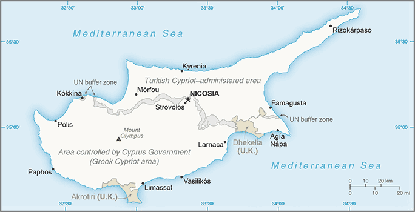
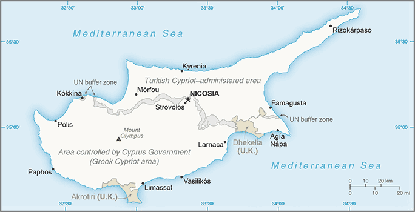

Europe :: CYPRUS
Introduction :: CYPRUS
-
A former British colony, Cyprus became independent in 1960 following years of resistance to British rule. Tensions between the Greek Cypriot majority and Turkish Cypriot minority came to a head in December 1963, when violence broke out in the capital of Nicosia. Despite the deployment of UN peacekeepers in 1964, sporadic intercommunal violence continued, forcing most Turkish Cypriots into enclaves throughout the island. In 1974, a Greek Government-sponsored attempt to overthrow the elected president of Cyprus was met by military intervention from Turkey, which soon controlled more than a third of the island. In 1983, the Turkish Cypriot administered area declared itself the "Turkish Republic of Northern Cyprus" ("TRNC"), but it is recognized only by Turkey. A UN-mediated agreement, the Annan Plan, failed to win approval by both communities in 2004. In February 2014, after a hiatus of nearly two years, the leaders of the two communities resumed formal discussions under UN auspices aimed at reuniting the divided island. Talks were suspended in October 2014, but resumed in earnest in May 2015 following the election of a new Turkish Cypriot "president." The entire island entered the EU on 1 May 2004, although the EU acquis - the body of common rights and obligations - applies only to the areas under the internationally recognized government, and is suspended in the area administered by Turkish Cypriots. However, individual Turkish Cypriots able to document their eligibility for Republic of Cyprus citizenship legally enjoy the same rights accorded to other citizens of EU states.
Geography :: CYPRUS
-
Middle East, island in the Mediterranean Sea, south of Turkey; note - Cyprus views itself as part of Europe; geopolitically, it can be classified as falling within Europe, the Middle East, or both35 00 N, 33 00 EMiddle Easttotal: 9,251 sq km (of which 3,355 sq km are in north Cyprus)land: 9,241 sq kmwater: 10 sq kmcountry comparison to the world: 170about 0.6 times the size of Connecticuttotal: 156 kmborder sovereign base areas: Akrotiri 48 km, Dhekelia 108 km648 kmterritorial sea: 12 nmcontiguous zone: 24 nmcontinental shelf: 200-m depth or to the depth of exploitationtemperate; Mediterranean with hot, dry summers and cool winterscentral plain with mountains to north and south; scattered but significant plains along southern coastmean elevation: 91 melevation extremes: lowest point: Mediterranean Sea 0 mhighest point: Mount Olympus 1,951 mcopper, pyrites, asbestos, gypsum, timber, salt, marble, clay earth pigmentagricultural land: 13.4%arable land 9.8%; permanent crops 3.2%; permanent pasture 0.4%forest: 18.8%other: 67.8% (2011 est.)460 sq km (2012)population concentrated in central Nicosia and in the major cities of the south: Paphos, Limassol, and Larnacamoderate earthquake activity; droughtswater resource problems (no natural reservoir catchments, seasonal disparity in rainfall, sea water intrusion to island's largest aquifer, increased salination in the north); water pollution from sewage and industrial wastes; coastal degradation; loss of wildlife habitats from urbanizationparty to: Air Pollution, Air Pollution-Nitrogen Oxides, Air Pollution-Persistent Organic Pollutants, Air Pollution-Sulfur 94, Biodiversity, Climate Change, Climate Change-Kyoto Protocol, Desertification, Endangered Species, Environmental Modification, Hazardous Wastes, Law of the Sea, Marine Dumping, Ozone Layer Protection, Ship Pollution, Wetlandssigned, but not ratified: none of the selected agreementsthe third largest island in the Mediterranean Sea (after Sicily and Sardinia)
People and Society :: CYPRUS
-
1,221,549 (July 2017 est.)country comparison to the world: 159noun: Cypriot(s)adjective: CypriotGreek 98.8%, other 1% (includes Maronite, Armenian, Turkish-Cypriot), unspecified 0.2%note: data represent only the government-controlled area of Cyprus (2011 est.)Greek (official) 80.9%, Turkish (official) 0.2%, English 4.1%, Romanian 2.9%, Russian 2.5%, Bulgarian 2.2%, Arabic 1.2%, Filipino 1.1%, other 4.3%, unspecified 0.6%note: data represent only the government-controlled area of Cyprus (2011 est.)Orthodox Christian 89.1%, Roman Catholic 2.9%, Protestant/Anglican 2%, Muslim 1.8%, Buddhist 1%, other (includes Maronite, Armenian Church, Hindu) 1.4%, unknown 1.1%, none/atheist 0.6%note: data represent only the government-controlled area of Cyprus (2011 est.)0-14 years: 15.6% (male 97,955/female 92,648)15-24 years: 13.81% (male 91,846/female 76,853)25-54 years: 47.04% (male 303,297/female 271,364)55-64 years: 11.45% (male 67,053/female 72,854)65 years and over: 12.09% (male 63,870/female 83,809) (2017 est.)total dependency ratio: 42.3youth dependency ratio: 24elderly dependency ratio: 18.3potential support ratio: 5.5note: data represent the whole country (2015 est.)total: 36.8 yearsmale: 35.5 yearsfemale: 38.3 years (2017 est.)country comparison to the world: 691.32% (2017 est.)country comparison to the world: 8611.3 births/1,000 population (2017 est.)country comparison to the world: 1766.8 deaths/1,000 population (2017 est.)country comparison to the world: 1378.7 migrant(s)/1,000 population (2017 est.)country comparison to the world: 13population concentrated in central Nicosia and in the major cities of the south: Paphos, Limassol, and Larnacaurban population: 66.8% of total population (2017)rate of urbanization: 0.84% annual rate of change (2015-20 est.)NICOSIA (capital) 251,000 (2014)at birth: 1.05 male(s)/female0-14 years: 1.06 male(s)/female15-24 years: 1.19 male(s)/female25-54 years: 1.11 male(s)/female55-64 years: 0.92 male(s)/female65 years and over: 0.77 male(s)/femaletotal population: 1.04 male(s)/female (2016 est.)28.8 yearsnote: data represent only government-controlled areas (2014 est.)7 deaths/100,000 live births (2015 est.)country comparison to the world: 164total: 7.9 deaths/1,000 live birthsmale: 9.2 deaths/1,000 live birthsfemale: 6.4 deaths/1,000 live births (2017 est.)country comparison to the world: 155total population: 78.8 yearsmale: 76 yearsfemale: 81.8 years (2017 est.)country comparison to the world: 541.47 children born/woman (2017 est.)country comparison to the world: 2007.4% of GDP (2014)country comparison to the world: 672.5 physicians/1,000 population (2014)3.5 beds/1,000 population (2011)improved:urban: 100% of populationrural: 100% of populationtotal: 100% of populationunimproved:urban: 0% of populationrural: 0% of populationtotal: 0% of population (2015 est.)improved:urban: 100% of populationrural: 100% of populationtotal: 100% of populationunimproved:urban: 0% of populationrural: 0% of populationtotal: 0% of population (2015 est.)NANANA21.8% (2016)country comparison to the world: 846.4% of GDP (2013)country comparison to the world: 19definition: age 15 and over can read and writetotal population: 99.1%male: 99.5%female: 98.7% (2015 est.)total: 15 yearsmale: 14 yearsfemale: 15 years (2015)total: 32.8%male: 34.7%female: 31.1% (2015 est.)country comparison to the world: 32demographic data for Cyprus represent the population of the government-controlled area and the area administered by Turkish Cypriots, unless otherwise indicated
Government :: CYPRUS
-
conventional long form: Republic of Cyprusconventional short form: Cypruslocal long form: Kypriaki Dimokratia/Kibris Cumhuriyetilocal short form: Kypros/Kibrisnote: the Turkish Cypriot community, which administers the northern part of the island, refers to itself as the "Turkish Republic of Northern Cyprus" or "TRNC" ("Kuzey Kibris Turk Cumhuriyeti" or "KKTC")etymology: the derivation of the name "Cyprus" is unknown, but the extensive mining of copper metal on the island in antiquity gave rise to the Latin word "cuprum" for copperRepublic of Cyprus - presidential democracy; Turkish Republic of Northern Cyprus (self-declared) - semi-presidential democracynote: a separation of the two main ethnic communities inhabiting the island began following the outbreak of communal strife in 1963; this separation was further solidified when a Greek military-junta-supported coup attempt prompted the Turkish intervention in July 1974 that gave the Turkish Cypriots de facto control in the north; Greek Cypriots control the only internationally recognized government on the island; on 15 November 1983, then Turkish Cypriot "President" Rauf DENKTAS declared independence and the formation of a "Turkish Republic of Northern Cyprus" ("TRNC"), which is recognized only by Turkeyname: Nicosia (Lefkosia/Lefkosa)geographic coordinates: 35 10 N, 33 22 Etime difference: UTC+2 (7 hours ahead of Washington, DC, during Standard Time)daylight saving time: +1hr, begins last Sunday in March; ends last Sunday in October6 districts; Ammochostos (Famagusta); (all but a small part located in the Turkish Cypriot community), Keryneia (Kyrenia; the only district located entirely in the Turkish Cypriot community), Larnaka (Larnaca; with a small part located in the Turkish Cypriot community), Lefkosia (Nicosia; a small part administered by Turkish Cypriots), Lemesos (Limassol), Pafos (Paphos); note - the 5 "districts" of the "TRNC" are Gazimagusa (Famagusta), Girne (Kyrenia), Guzelyurt (Morphou), Iskele (Trikomo), Lefkosa (Nicosia)16 August 1960 (from the UK); note - Turkish Cypriots proclaimed self-rule on 13 February 1975 and independence in 1983, but these proclamations are recognized only by TurkeyIndependence Day, 1 October (1960); note - Turkish Cypriots celebrate 15 November (1983) as "Republic Day"history: ratified 16 August 1960; note - in 1963, the constitution was partly suspended as Turkish Cypriots withdrew from the government; Turkish-held territory in 1983 was declared the "Turkish Republic of Northern Cyprus" ("TRNC"); in 1985, the "TRNC" approved its own constitutionamendments: constitution of the Republic of Cyprus - proposed by the House of Representatives; passage requires at least two-thirds majority vote of the total membership of the “Greek Community” and the “Turkish Community”; however, all seats of Turkish Cypriot members have remained vacant since 1964; amended several times, last in 2016constitution of the “Turkish Republic of Northern Cyprus” - proposed by at least 10 members of the Assembly of the Republic; passage requires at least two-thirds majority vote of the total Assembly membership and approval by referendum; amended 2014mixed legal system of English common law and civil law with European law supremacyaccepts compulsory ICJ jurisdiction with reservations; accepts ICCt jurisdictioncitizenship by birth: nocitizenship by descent only: at least one parent must be a citizen of Cyprusdual citizenship recognized: yesresidency requirement for naturalization: 7 years18 years of age; universalchief of state: President Nikos ANASTASIADIS (since 28 February 2013); the president is both chief of state and head of government; note - vice presidency reserved for a Turkish Cypriot, but vacant since 1974 because Turkish Cypriots do not participate in the Cyprus Governmenthead of government: President Nikos ANASTASIADIS (since 28 February 2013)cabinet: Council of Ministers appointed by the president; note - under the 1960 constitution, 3 of the ministerial posts reserved for Turkish Cypriots, appointed by the vice president; positions currently filled by Greek Cypriotselections/appointments: president directly elected by absolute majority popular vote in 2 rounds if needed for a 5-year term; election last held on 17 and 24 February 2013 (next to be held in February 2018)election results: Nikos ANASTASIADIS elected president; percent of vote in first round - Nikos ANASTASIADIS (DISY) 45.5%, Stavros MALAS (AKEL) 26.9%, Giorgos LILLIKAS (SP) 24.9%, other 2.7%; percent of vote in second round - Nikos ANASTASIADIS 57.5%, Savros MALAS 42.5%note: Mustafa AKINCI assumed office as "president" of the "TRNC" on 30 April 2015; percent of vote in first round (19 April 2015) - Dervis EROGLU (UBP) 28.2%, Mustafa AKINCI (TDP) 26.9%, other 44.9%; percent of vote in runoff (26 April 2015) - AKINCI 60.5%, EROGLU 39.5%; Huseyin OZGURGUN is "TRNC prime minister" since 8 April 2016description: area under government control: unicameral House of Representatives or Vouli Antiprosopon (80 seats; 56 assigned to Greek Cypriots, 24 to Turkish Cypriots, but only those assigned to Greek Cypriots are filled; members directly elected by both proportional representation and preferential vote; members serve 5-year terms); area administered by Turkish Cypriots: unicameral Assembly of the Republic or Cumhuriyet Meclisi (50 seats; members directly elected by proportional representation vote to serve 5-year terms)elections: area under government control: last held on 22 May 2016 (next to be held in May 2021); area administered by Turkish Cypriots: last held on 28 July 2013 (next to be held in July 2018)election results: area under government control: House of Representatives - percent of vote by party - DISY 30.7%, AKEL 25.7%, DIKO 14.5%, KS-EDEK 6.2%, Citizen's Alliance 6.0% Solidarity Movement 5.2%, other 11.7%; seats by party - DISY 18, AKEL 16, DIKO 9, KS-EDEK 3, Citizen's Alliance 3, Solidarity Movement 3, other 4; area administered by Turkish Cypriots: "Assembly of the Republic" - percent of vote by party - CTP-BG 38.4%, UBP 27.3%, DP-UG 23.2%, TDP 7.4%, other 3.7%; seats by party - CTP-BG 21, UBP 14, DP-UG 12, TDP 3highest court(s): Supreme Court of Cyprus (consists of 13 judges including the court president); note - the highest court in the "Turkish Republic of Northern Cyprus (TRNC)" is the "Supreme Court" (consists of 8 "judges" including the "court president")judge selection and term of office: Republic of Cyprus Supreme Court judges appointed by the president of the republic upon the recommendation of the Supreme Court judges; judges can serve until age 68; "TRNC Supreme Court" judges appointed by the "Supreme Council of Judicature," a 12-member body of judges, the attorney general, appointees - 1 each by the president of the "TRNC" and by the "Legislative Assembly" - and 1 member elected by the bar association; judge tenure NAsubordinate courts: Republic of Cyprus district courts; Assize Courts; Administrative Court; specialized courts for issues relating to family, industrial disputes, military, and rent control; "TRNC Assize Courts"; "district and family courts"area under government control:Citizens' Alliance or SP [Giorgos LILLIKAS]Democratic Party or DIKO [Nikolas PAPADOPOULOS]Democratic Rally or DISY [Averof NEOPHYTOU]Ecological and Environmental Movement or KOP (Green party) [Giorgos PERDIKIS]Movement of Social Democrats-United Democratic Center Union or KS-EDEK [Marinos SIZOPOULOS]National Popular Front or ELAM [Christos CHRISTOU]Progressive Party of the Working People or AKEL (Communist party) [Andros KYPRIANOU]Solidarity Movement [Eleni THEOCHAROUS]United Democrats or EDI [Praxoula ANTONIADOU]area administered by Turkish Cypriots:Communal Democracy Party or TDP [Cemal OZYIGIT]Cyprus Socialist Party or KSP [Mehmet BIRINCI]Democrat Party-National Forces or DP-UG [Serdar DENKTAS]National Justice Party or UAP [Fatma SOLMAZ]National Unity Party or UBP [Huseyin OZGURGUN]New Cyprus Party or YKP [Murat KANATLI]People's Party or HP [Kudret OZERSAY]Rebirth Party or YDP [Erhan ARIKLI]Republican Turkish Party-United Forces or CTP-BG [Tufan ERHURMAN]Social Democratic Party or SDP [Tozun TUNALI]United Cyprus Party or BKP [Izzet IZCAN]Confederation of Cypriot Workers or SEK [Andreas MATSAS] (pro-West)Pan-Cyprian Labor Federation or PEO [Pambis KYRITSIS] (communist-controlled)area administered by Turkish Cypriots: Federation of Revolutionary Labor Unions or Dev-IsFederation of Turkish Cypriot Labor Unions or Turk-Sen [Arslan BICAKLI]Australia Group, C, CD, CE, EBRD, ECB, EIB, EMU, EU, FAO, IAEA, IBRD, ICAO, ICC (national committees), ICCt, ICRM, IDA, IFAD, IFC, IFRCS, IHO, ILO, IMF, IMO, IMSO, Interpol, IOC, IOM, IPU, ISO, ITSO, ITU, ITUC (NGOs), MIGA, NAM, NSG, OAS (observer), OIF, OPCW, OSCE, PCA, UN, UNCTAD, UNESCO, UNHCR, UNIDO, UNIFIL, UNWTO, UPU, WCO, WFTU (NGOs), WHO, WIPO, WMO, WTOchief of mission: Ambassador Leonidas PANTELIDIS (since 27 June 2016)chancery: 2211 R Street NW, Washington, DC 20008telephone: [1] (202) 462-5772, 462-0873FAX: [1] (202) 483-6710consulate(s) general: New Yorknote: representative of the Turkish Cypriot community in the US is Ismet KORUKOGLU; office at 1667 K Street NW, Washington, DC; telephone [1] (202) 887-6198chief of mission: Ambassador Kathleen Ann DOHERTY (since 7 October 2015)embassy: corner of Metochiou and Ploutarchou Streets, 2407 Engomi, Nicosiamailing address: P. O. Box 24536, 1385 Nicosiatelephone: [357] (22) 393939FAX: [357] (22) 393344centered on a white field is a copper-colored silhouette of the island (the island has long been famous for its copper deposits) above two olive-green-colored, crossed olive branches; the branches symbolize the hope for peace and reconciliation between the Greek and Turkish communitiesnote 1: one of only two national flags that uses a map as a design element; the flag of Kosovo is the othernote 2: the "Turkish Republic of Northern Cyprus" flag retains the white field of the Cyprus national flag but displays narrow horizontal red stripes positioned a small distance from the top and bottom edges between which are centered a red crescent and a red five-pointed star; the banner is modeled after the Turkish national flag but with the colors reversedCypriot mouflon (wild sheep), white dove; national colors: blue, whitename: "Ymnos eis tin Eleftherian" (Hymn to Liberty)lyrics/music: Dionysios SOLOMOS/Nikolaos MANTZAROSnote: adopted 1960; Cyprus adopted the Greek national anthem as its own; the Turkish Cypriot community in Cyprus uses the anthem of Turkey
Economy :: CYPRUS
-
The area of the Republic of Cyprus under government control has a market economy dominated by a services sector that accounts for more than four-fifths of GDP. Tourism, finance, shipping, and real estate have traditionally been the most important services. Cyprus has been a member of the EU since May 2004 and adopted the euro as its national currency in January 2008.During the first five years of EU membership, the Cyprus economy grew at an average rate of about 4%, with unemployment between 2004 and 2008 averaging about 4%. However, the economy tipped into recession in 2009 as the ongoing global financial crisis and resulting low demand hit the tourism and construction sectors. An overextended banking sector with excessive exposure to Greek debt added to the contraction. Cyprus’ biggest two banks were among the largest holders of Greek bonds in Europe and had a substantial presence in Greece through bank branches and subsidiaries. Following numerous downgrades of its credit rating, Cyprus lost access to international capital markets in May 2011. In July 2012, Cyprus became the fifth euro-zone government to request an economic bailout program from the European Commission, European Central Bank and the International Monetary Fund - known collectively as the "Troika."Shortly after the election of President Nikos ANASTASIADES in February 2013, Cyprus reached an agreement with the Troika on a $13 billion bailout that triggered a two-week bank closure and the imposition of capital controls that remained partially in place until April 2015. Cyprus' two largest banks merged and the combined entity was recapitalized through conversion of some large bank deposits to shares and imposition of losses on bank bondholders. As with other EU countries, the Troika conditioned the bailout on passing financial and structural reforms and privatizing state-owned enterprises. Despite downsizing and restructuring, the Cypriot financial sector throughout 2015 remained burdened by the largest stock of non-performing loans in the euro zone, equal to nearly half of all loans. Since the bailout, Cyprus has received positive appraisals by the Troika and outperformed fiscal targets but has struggled to overcome political opposition to bailout-mandated legislation, particularly regarding privatizations. Cyprus emerged from recession in 2015 and its economy grew an estimated 1.5% for the year, setting a positive tone for the scheduled end of the bailout program in March 2016. Growth recovered to 2.8% in 2016. The European Commission projects continued GDP growth in Cyprus of 2.5% in 2017 and an 11.1% reduction in unemployment, but the rate of non-performing loans (NPLs) is still very high at around 49%. If Cypriot banks can increase the pace of resolution of these NPLs, economic growth could exceed the projection.In October 2013, a US-Israeli consortium completed preliminary appraisals of hydrocarbon deposits in Cyprus’ exclusive economic zone (EEZ), which estimated gross mean reserves of about 130 billion cubic meters. Though exploration continues in Cyprus’ EEZ, no additional commercially exploitable reserves were identified during the exploratory drilling in 2014/2015. Developing offshore hydrocarbon resources remains a critical component of the government’s economic recovery efforts, but development has been delayed as a result of regional developments and disagreements about exploitation methods.Economy - overview: Even though the whole of the island is part of the EU, implementation of the EU "acquis communautaire" has been suspended in the area administered by Turkish Cypriots, known locally as the "Turkish Republic of Northern Cyprus" ("TRNC"), until political conditions permit the reunification of the island. The market-based economy of the "TRNC" is roughly one-fifth the size of its southern neighbor and is likewise dominated by the service sector with a large portion of the population employed by the government. In 2012 - the latest year for which data are available - the services sector, which includes the public sector, trade, tourism, and education, contributed 58.7% to economic output. In the same year, light manufacturing and agriculture contributed 2.7% and 6.2%, respectively. Manufacturing is limited mainly to food and beverages, furniture and fixtures, construction materials, metal and non-metal products, textiles and clothing. The “TRNC” maintains few economic ties with the Republic of Cyprus outside of trade in construction materials. Since its creation, the "TRNC" has heavily relied on financial assistance from Turkey, which supports the "TRNC" defense, telecommunications, water and postal services. The Turkish Lira is the preferred currency, though foreign currencies are widely accepted in business transactions. The "TRNC" remains vulnerable to the Turkish market and monetary policy because of its use of the Turkish Lira. The "TRNC" weathered the European financial crisis relatively unscathed - compared to the Republic of Cyprus - because of the lack of financial sector development, the health of the Turkish economy, and its separation from the rest of the island. The "TRNC" economy experienced growth estimated at 2.8% in 2013 and 2.3% in 2014 and is projected to grow 3.8% in 2015.$29.66 billion (2016 est.)$28.48 billion (2015 est.)$27.71 billion (2014 est.)note: data are in 2016 dollarsGDP (purchasing power parity): $1.829 billion (2007 est.)country comparison to the world: 131$19.81 billion (2016 est.)2.8% (2016 est.)1.7% (2015 est.)-1.5% (2014 est.)GDP - real growth rate: 2.3% (2014 est.)country comparison to the world: 105$35,000 (2016 est.)$34,000 (2015 est.)$33,100 (2014 est.)note: data are in 2016 dollarscountry comparison to the world: 5510.3% of GDP (2016 est.)11.6% of GDP (2015 est.)8% of GDP (2014 est.)country comparison to the world: 154household consumption: 69.6%government consumption: 15.2%investment in fixed capital: 16.8%investment in inventories: -1.2%exports of goods and services: 62%imports of goods and services: -62.4% (2016 est.)agriculture: 2.3%industry: 11%services: 86.7% (2016 est.)citrus, vegetables, barley, grapes, olives, vegetables; poultry, pork, lamb; dairy, cheeseAgriculture - products: citrus fruit, dairy, potatoes, grapes, olives, poultry, lambtourism, food and beverage processing, cement and gypsum, ship repair and refurbishment, textiles, light chemicals, metal products, wood, paper, stone and clay productsIndustries: foodstuffs, textiles, clothing, ship repair, clay, gypsum, copper, furniture7.2% (2016 est.)Industrial production growth rate: -0.3% (2007 est.)country comparison to the world: 23422,300 (2016 est.)Labor force: 95,030 (2007 est.)country comparison to the world: 159agriculture: 3.8%industry: 15.2%services: 81% (2014 est.)Labor force - by occupation: agriculture: 14.5%, industry: 29%, services: 56.5% (2004)13% (2016 est.)14.9% (2015 est.)Unemployment rate: 9.4% (2005 est.)country comparison to the world: 159NA%Population below poverty line: %NAlowest 10%: 3.3%highest 10%: 28.8% (2014)34.8 (2014 est.)32.4 (2013 est.)country comparison to the world: 95revenues:: $7.768 billionexpenditures:: $7.696 billion (2016 est.)Budget: revenues: $2.5 billion, expenditures: $2.5 billion (2006)39.2% of GDP (2016 est.)country comparison to the world: 420.4% of GDP (2016 est.)country comparison to the world: 36107.8% of GDP (2016 est.)107.5% of GDP (2015 est.)note: data cover general government debt, and includes debt instruments issued (or owned) by government entities other than the treasury; the data include treasury debt held by foreign entities; the data exclude debt issued by subnational entities, as well as intra-governmental debt; intra-governmental debt consists of treasury borrowings from surpluses in the social funds, such as for retirement, medical care, and unemploymentcountry comparison to the world: 15calendar year-1.2% (2016 est.)-2.1% (2015 est.)country comparison to the world: 70.25% (31 December 2016)0.3% (31 December 2010)note: this is the European Central Bank's rate on the marginal lending facility, which offers overnight credit to banks in the euro areacountry comparison to the world: 1384.33% (31 December 2016 est.)4.69% (31 December 2015 est.)country comparison to the world: 155$3.978 billion (31 December 2016 est.)$4.048 billion (31 December 2015 est.)note: see entry for the European Union for money supply for the entire euro area; the European Central Bank (ECB) controls monetary policy for the 18 members of the Economic and Monetary Union (EMU); individual members of the EMU do not control the quantity of money circulating within their own borderscountry comparison to the world: 109$34.8 billion (31 December 2016 est.)$36.49 billion (31 December 2015 est.)country comparison to the world: 75$50.82 billion (31 December 2016 est.)$59.58 billion (31 December 2015 est.)country comparison to the world: 65$2.692 billion (31 December 2015 est.)$4.031 billion (31 December 2014 est.)$2.105 billion (31 December 2013 est.)country comparison to the world: 98$-1.042 billion (2016 est.)$-576 million (2015 est.)country comparison to the world: 125$2.7 billion (2016 est.)$2.753 billion (2015 est.)Exports: $68.1 million, f.o.b. (2007 est.)country comparison to the world: 128citrus, potatoes, pharmaceuticals, cement, clothingUK 12%, Greece 10.2%, Sweden 6.9%, Liberia 5.8%, Libya 4.9% (2016)$6.96 billion (2016 est.)$6.267 billion (2015 est.)Imports: $1.2 billion, f.o.b. (2007 est.)country comparison to the world: 108consumer goods, petroleum and lubricants, machinery, transport equipmentGreece 18%, Germany 16.9%, China 7.7%, Italy 5.7%, UK 5.5%, South Korea 4.4%, France 4% (2016)$817.7 million (31 December 2016 est.)$807.6 million (31 December 2015 est.)Reserves of foreign exchange and gold: $NAcountry comparison to the world: 129$95.28 billion (31 December 2013 est.)$103.5 billion (31 December 2012 est.)Debt - external: $NAcountry comparison to the world: 49$174.5 billion (31 December 2016 est.)$175 billion (31 December 2015 est.)country comparison to the world: 32$175.3 billion (31 December 2016 est.)$175.3 billion (31 December 2015 est.)country comparison to the world: 27euros (EUR) per US dollar -0.9214 (2016 est.)0.885 (2015 est.)0.885 (2014 est.)0.7634 (2013 est.)0.7752 (2012 est.)Exchange rates: Turkish new lira per US dollar: 1.9 (2013) 1.8 (2012) 1.67 (2011) 1.5 (2010) 1.55 (2009)Economy - overview: Even though the whole of the island is part of the EU, implementation of the EU "acquis communautaire" has been suspended in the area administered by Turkish Cypriots, known locally as the "Turkish Republic of Northern Cyprus" ("TRNC"), until political conditions permit the reunification of the island. The market-based economy of the "TRNC" is roughly one-fifth the size of its southern neighbor and is likewise dominated by the service sector with a large portion of the population employed by the government. In 2012 - the latest year for which data are available - the services sector, which includes the public sector, trade, tourism, and education, contributed 58.7% to economic output. In the same year, light manufacturing and agriculture contributed 2.7% and 6.2%, respectively. Manufacturing is limited mainly to food and beverages, furniture and fixtures, construction materials, metal and non-metal products, textiles and clothing. The “TRNC” maintains few economic ties with the Republic of Cyprus outside of trade in construction materials. Since its creation, the "TRNC" has heavily relied on financial assistance from Turkey, which supports the "TRNC" defense, telecommunications, water and postal services. The Turkish Lira is the preferred currency, though foreign currencies are widely accepted in business transactions. The "TRNC" remains vulnerable to the Turkish market and monetary policy because of its use of the Turkish Lira. The "TRNC" weathered the European financial crisis relatively unscathed - compared to the Republic of Cyprus - because of the lack of financial sector development, the health of the Turkish economy, and its separation from the rest of the island. The "TRNC" economy experienced growth estimated at 2.8% in 2013 and 2.3% in 2014 and is projected to grow 3.8% in 2015.GDP (purchasing power parity): $1.829 billion (2007 est.)GDP - real growth rate: 2.3% (2014 est.)2.8% (2013 est.)GDP - per capita: $11,700 (2007 est.)GDP - composition by sector: agriculture: 6.2%, industry: 35.1%, services: 58.7% (2012 est.)Labor force: 95,030 (2007 est.)Labor force - by occupation: agriculture: 14.5%, industry: 29%, services: 56.5% (2004)Unemployment rate: 9.4% (2005 est.)Population below poverty line: %NAInflation rate: 11.4% (2006)Budget: revenues: $2.5 billion, expenditures: $2.5 billion (2006)Agriculture - products: citrus fruit, dairy, potatoes, grapes, olives, poultry, lambIndustries: foodstuffs, textiles, clothing, ship repair, clay, gypsum, copper, furnitureIndustrial production growth rate: -0.3% (2007 est.)Electricity production: 998.9 million kWh (2005)Electricity consumption: 797.9 million kWh (2005)Exports: $68.1 million, f.o.b. (2007 est.)Export - commodities: citrus, dairy, potatoes, textilesExport - partners: Turkey 40%; direct trade between the area administered by Turkish Cypriots and the area under government control remains limitedImports: $1.2 billion, f.o.b. (2007 est.)Import - commodities: vehicles, fuel, cigarettes, food, minerals, chemicals, machineryImport - partners: Turkey 60%; direct trade between the area administered by Turkish Cypriots and the area under government control remains limitedReserves of foreign exchange and gold: $NADebt - external: $NACurrency (code): Turkish new lira (YTL)Exchange rates: Turkish new lira per US dollar: 1.9 (2013) 1.8 (2012) 1.67 (2011) 1.5 (2010) 1.55 (2009)
Energy :: CYPRUS
-
electrification - total population: 100% (2016)4.243 billion kWh (2015 est.)country comparison to the world: 1234.028 billion kWh (2015 est.)country comparison to the world: 1270 kWh (2016 est.)country comparison to the world: 1280 kWh (2016 est.)country comparison to the world: 1411.742 million kW (2015 est.)country comparison to the world: 11787.4% of total installed capacity (2015 est.)country comparison to the world: 660% of total installed capacity (2015 est.)country comparison to the world: 760% of total installed capacity (2015 est.)country comparison to the world: 17112.8% of total installed capacity (2015 est.)country comparison to the world: 580 bbl/day (2016 est.)country comparison to the world: 1250 bbl/day (2014 est.)country comparison to the world: 1130 bbl/day (2014 est.)country comparison to the world: 1170 bbl (1 January 2017 es)country comparison to the world: 1250 bbl/day (2014 est.)country comparison to the world: 13446,000 bbl/day (2015 est.)country comparison to the world: 1060 bbl/day (2014 est.)country comparison to the world: 14845,740 bbl/day (2014 est.)country comparison to the world: 860 cu m (2013 est.)country comparison to the world: 1260 cu m (2013 est.)country comparison to the world: 1740 cu m (2013 est.)country comparison to the world: 920 cu m (2013 est.)country comparison to the world: 116141.6 billion cu m (1 January 2014 es)country comparison to the world: 489.1 million Mt (2013 est.)country comparison to the world: 108
Communications :: CYPRUS
-
total subscriptions: 320,573subscriptions per 100 inhabitants: 27 (July 2016 est.)country comparison to the world: 112total: 1,133,780subscriptions per 100 inhabitants: 94 (July 2016 est.)country comparison to the world: 157general assessment: excellent in both area under government control and area administered by Turkish Cypriotsdomestic: open-wire, fiber-optic cable, and microwave radio relayinternational: country code - 357 (area administered by Turkish Cypriots uses the country code of Turkey - 90); a number of submarine cables, including the SEA-ME-WE-3, combine to provide connectivity to Western Europe, the Middle East, and Asia; tropospheric scatter; satellite earth stations - 8 (3 Intelsat - 1 Atlantic Ocean and 2 Indian Ocean, 2 Eutelsat, 2 Intersputnik, and 1 Arabsat) (2015)mixture of state and privately run TV and radio services; the public broadcaster operates 2 TV channels and 4 radio stations; 6 private TV broadcasters, satellite and cable TV services including telecasts from Greece and Turkey, and a number of private radio stations are available; in areas administered by Turkish Cypriots, there are 2 public TV stations, 4 public radio stations, and 7 privately owned TV and 21 radio broadcast stations plus 6 radio and 4 TV channels of local universities, plus 1 radio station of military, security forces and 1 radio station of civil defense cooperation, as well as relay stations from Turkey (2017).cytotal: 915,036percent of population: 75.9% (July 2016 est.)country comparison to the world: 127
Transportation :: CYPRUS
-
number of registered air carriers: 2inventory of registered aircraft operated by air carriers: 6annual passenger traffic on registered air carriers: 23,404annual freight traffic on registered air carriers: 230,600 mt-km (2015)5B (2016)15 (2013)country comparison to the world: 145total: 132,438 to 3,047 m: 71,524 to 2,437 m: 2914 to 1,523 m: 3under 914 m: 1 (2017)total: 2under 914 m: 2 (2013)9 (2013)total: 20,006 kmgovernment control: 13,006 km (includes 2,277 km of expressways)paved: 8,564 kmunpaved: 4,442 kmTurkish Cypriot control: 7,000 km (2011)country comparison to the world: 108total: 838by type: bulk carrier 278, cargo 163, chemical tanker 77, container 201, liquefied gas 11, passenger 3, passenger/cargo 25, petroleum tanker 62, refrigerated cargo 5, roll on/roll off 9, vehicle carrier 4foreign-owned: 622 (Angola 1, Austria 1, Belgium 3, Bermuda 1, Canada 2, China 6, Denmark 6, Estonia 6, France 16, Germany 192, Greece 201, Hong Kong 2, India 4, Iran 10, Ireland 3, Italy 6, Japan 16, Netherlands 23, Norway 14, Philippines 1, Poland 24, Portugal 2, Russia 46, Singapore 1, Slovenia 5, Spain 6, Sweden 5, Turkey 1, UAE 3, UK 7, Ukraine 3, US 5)registered in other countries: 152 (Bahamas 23, Cambodia 4, Comoros 2, Finland 1, Gibraltar 1, Greece 3, Hong Kong 3, Liberia 9, Malta 32, Marshall Islands 40, Norway 1, Panama 5, Russia 13, Saint Vincent and the Grenadines 3, Sierra Leone 2, Singapore 6, unknown 4) (2010)country comparison to the world: 14major seaport(s): area under government control: Larnaca, Limassol, Vasilikos; area administered by Turkish Cypriots: Famagusta, Kyrenia
Military and Security :: CYPRUS
-
1.78% of GDP (2016)1.68% of GDP (2015)1.54% of GDP (2014)1.6% of GDP (2013)1.66% of GDP (2012)country comparison to the world: 37Republic of Cyprus: Cypriot National Guard (Ethniki Froura, EF, includes naval and air elements); Northern Cyprus: Turkish Cypriot Security Force (GKK) (2014)Cypriot National Guard (CNG): 18-50 years of age for compulsory military service for all Greek Cypriot males; 17 years of age for voluntary service; 14-month service obligation (2016)
Transnational Issues :: CYPRUS
-
hostilities in 1974 divided the island into two de facto autonomous entities, the internationally recognized Cypriot Government and a Turkish-Cypriot community (north Cyprus); the 1,000-strong UN Peacekeeping Force in Cyprus (UNFICYP) has served in Cyprus since 1964 and maintains the buffer zone between north and south; on 1 May 2004, Cyprus entered the EU still divided, with the EU's body of legislation and standards (acquis communitaire) suspended in the north; Turkey protests Cypriot Government creating hydrocarbon blocks and maritime boundary with Lebanon in March 2007IDPs: 272,000 (both Turkish and Greek Cypriots; many displaced since 1974) (2016)minor transit point for heroin and hashish via air routes and container traffic to Europe, especially from Lebanon and Turkey; some cocaine transits as well; despite a strengthening of anti-money-laundering legislation, remains vulnerable to money laundering; reporting of suspicious transactions in offshore sector remains weak